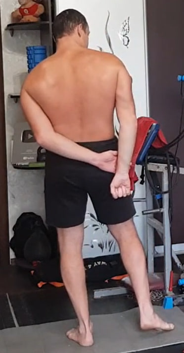
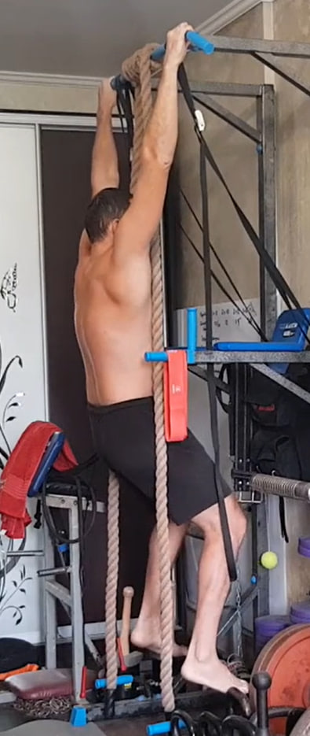
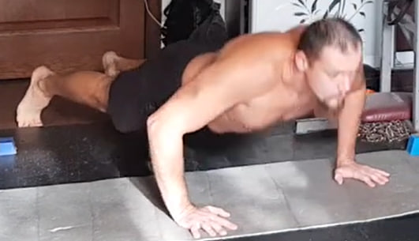

1. Colgamiento parcial con apoyo en los pies — 10×10 s

Agarra una barra o cualquier soporte sólido que no pueda romperse. No cuelgues todo tu peso como en una dominada: deja parte del peso sobre los pies para mantener un estiramiento seguro y controlado. Relaja los hombros y permite que la columna se alargue de forma natural.
Ejecución: Mantén 10 segundos y repite 10 veces.
2. Isometría para dorsal ancho detrás de la espalda — 10×10 s por lado

Ponte de pie y lleva el brazo de trabajo detrás de la espalda, sujetando la muñeca o la mano con la otra mano. La mano de apoyo tira del brazo hacia abajo, mientras que la zona bajo la escápula (dorsal ancho) intenta oponerse a ese movimiento, como si quisiera mantener el hombro en su sitio.
Ejecución: Mantén la contracción 10 segundos y repite 10 veces por cada lado.
3. Encogimientos escapulares en la barra — 2×10

Cuelga de la barra con control (si hace falta, deja parte del peso en los pies). Alterna un colgado relajado con un movimiento corto de hombros hacia abajo (depresión escapular), sin doblar los codos y sin balancearte.
Ejecución: 2 series de 10 repeticiones.
4. Isometría para dorsal ancho detrás de la espalda — 12×10 s por lado
Misma técnica que en el ejercicio 2: la mano de apoyo tira del brazo hacia abajo y el dorsal ancho se contrae para impedirlo, sin movimiento visible del brazo.
Ejecución: 12 repeticiones por cada lado, manteniendo 10 segundos en cada repetición.
5. Encogimientos escapulares en la barra — 2×12

Misma técnica que en el ejercicio 3: colgado controlado, brazos rectos, sin balanceos. Alterna relajación y hombros hacia abajo.
Ejecución: 2 series de 12 repeticiones.
6. Isometría para dorsal ancho detrás de la espalda — 15×10 s por lado

Misma técnica que en el ejercicio 2: tracción del brazo hacia abajo con bloqueo firme, torso estable y hombros sin elevarse hacia las orejas.
Ejecución: 15 repeticiones por cada lado, manteniendo 10 segundos en cada repetición.
7. Colgamiento parcial con apoyo en los pies — 2×15 (10 s)
Misma técnica que en el ejercicio 1: apoyo en los pies para controlar la carga, hombros relajados y columna larga.
Ejecución: 2 series de 15 repeticiones de 10 segundos.
8. Isometría para dorsal ancho detrás de la espalda — 20×10 s por lado

Misma técnica que en el ejercicio 2: la mano de apoyo tira hacia abajo, el dorsal ancho se contrae para impedir el movimiento, sin balanceos.
Ejecución: 20 repeticiones por cada lado, manteniendo 10 segundos en cada repetición.
9. Flexiones — al fallo

Colócate en plancha con el cuerpo firme. Baja con control y sube fuerte. Termina arriba sin bloquear completamente los codos. Respira con ritmo y evita hundirte en la zona lumbar.
Ejecución: 1 serie al máximo, hasta el agotamiento.
10. Isometría para dorsal ancho detrás de la espalda — 10×10 s por lado

Misma técnica que en el ejercicio 2: tracción del brazo hacia abajo con bloqueo firme, sin giro del cuerpo.
Ejecución: 10 repeticiones por cada lado, manteniendo 10 segundos en cada repetición.
11. Hiperextensión isométrica en el suelo — 10×10 s
Acuéstate boca abajo. Manos detrás de la cabeza, sin tirar del cuello. Piernas estiradas y activas. Eleva simultáneamente el pecho y las piernas, creando una contracción fuerte de la zona lumbar y los glúteos.
Ejecución: 10 repeticiones, manteniendo 10 segundos arriba en cada repetición.
12. Isometría para dorsal ancho detrás de la espalda — 12×10 s por lado

Misma técnica que en el ejercicio 2: la mano de apoyo tira hacia abajo y el dorsal ancho lo impide, sin movimiento.
Ejecución: 12 repeticiones por cada lado, manteniendo 10 segundos en cada repetición.
13. Hiperextensión isométrica en el suelo — 2×12 (10 s)

Misma técnica que en el ejercicio 11: eleva pecho y piernas con control, mantén la tensión sin rebotes y baja suave.
Ejecución: 2 series de 12 repeticiones, manteniendo 10 segundos arriba en cada repetición.
14. Isometría para dorsal ancho detrás de la espalda — 15×10 s por lado

Misma técnica que en el ejercicio 2: tracción del brazo hacia abajo, torso estable, hombros abajo.
Ejecución: 15 repeticiones por cada lado, manteniendo 10 segundos en cada repetición.
15. Hiperextensión en el suelo con pausa — 2×15 (10 s)

Misma posición que en el ejercicio 11, pero aquí haces una pausa arriba manteniendo la tensión (pecho y piernas elevados) antes de bajar con control.
Ejecución: 2 series de 15 repeticiones, con pausa arriba (estándar: 10 segundos).
16. Flexiones — al fallo
Misma técnica que en el ejercicio 9: plancha firme, descenso controlado y subida potente. Termina arriba sin bloquear completamente los codos.
Ejecución: 1 serie al máximo, hasta el agotamiento.